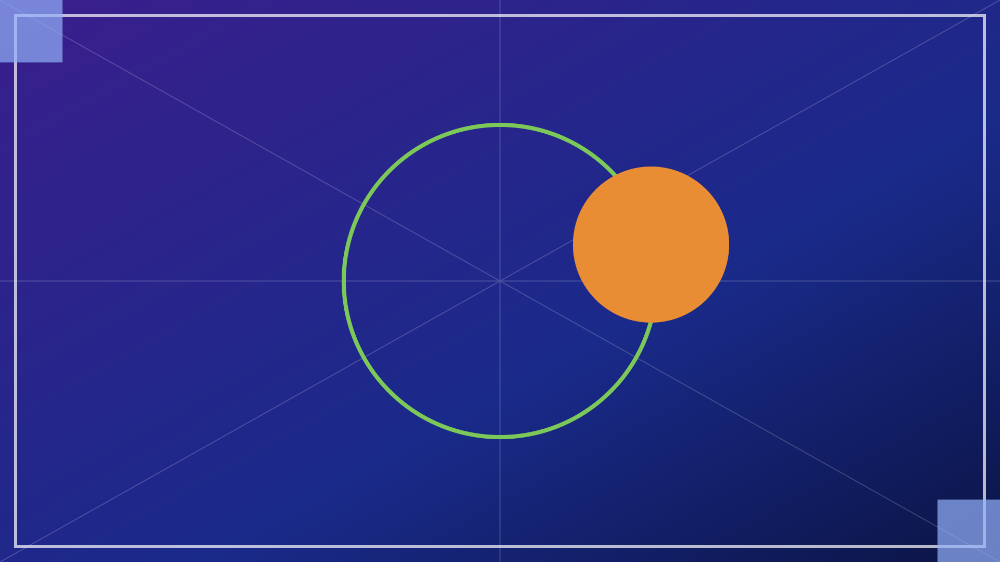

Проигрыватель — контейнер фиксированного размера, как в Educaplay: фон — последний кадр ролика, игра лежит прямо на фоне, без подложки, и листается внутри. Телефон — почти весь экран под шапкой сайта; планшет и десктоп — окно 16:9 между шапкой и подвалом; на весь экран разворачивается тот же контейнер.
Как устроено
На всех кадрах фон — один и тот же «кадр ролика» (заглушка frame-demo.svg 16:9 с кругом и диагоналями): он растянут на весь проигрыватель object-fit: cover, не искажается (круг остаётся кругом), обрезается по краям и не двигается, пока листается игра. Роликов пока нет — в играх фон тёмный #171B3A с узором платы.
Телефон 360×740
Nataskium

4:12
Математика цивилизаций3 / 10
Какая цивилизация первой стала записывать ноль как число?
Выберите один ответ
область 684
Подвал сайта — ниже экрана.
Область = 100dvh − шапка (56). Полоса 56px (шаги и «На весь экран») не листается; слот 628px листается.
Телефон · светлый кадр (тема light)
Nataskium
4:12
Математика цивилизаций3 / 10
Какая цивилизация первой стала записывать ноль как число?
Выберите один ответ
Тот же экран и те же размеры; сменился набор переменных --g-*: тёмный текст, светлый скрим, белые стеклянные поверхности.
Телефон · весь экран
4:12
Математика цивилизаций3 / 10
Какая цивилизация первой стала записывать ноль как число?
Выберите один ответ
весь экран 740
Тот же контейнер: шапки и подвала нет, кнопка стала «Свернуть», слот 684px.
Планшет 768 · окно 4:3
Nataskium
4:12
Осталось
Математика цивилизаций3 / 10
Какая цивилизация первой стала записывать ноль как число?
Контейнер фиксированного размера. Телефон: высота 100dvh − шапка, подвал сайта ниже экрана. Планшет: окно 4:3, десктоп: окно 16:9 (aspect-ratio) между шапкой и подвалом; на низких ноутбуках (окно ≈650px) окно сжимается с сохранением 16:9. Длинная игра окно не растягивает.
Что неподвижно, что листается. Фон (кадр ролика) и полоса проигрывателя стоят. Листается только слот (overflow-y: auto), в нём игра — прямо на фоне, без белой подложки. Подсказки, что листается: тонкая полоса прокрутки справа и тень со стрелкой у нижнего края, пока внизу есть ещё содержимое.
Весь экран. На весь экран разворачивается тот же контейнер. Шапки и подвала нет, слот выше на высоту шапки (телефон) или на разницу окна и экрана (десктоп). Правила прокрутки те же.
Полоса. В фазе игры — шаги и «На весь экран» / «Свернуть»; «Пропустить» нет. 56px на телефоне, 48px в окне и на весь экран на планшете и десктопе. Кнопка 44px.
Без белой подложки. Игра лежит прямо на фоне интро, фон просвечивает. Читаемость дают скрим и светлый текст; варианты, клетки, плитки — полупрозрачные «стеклянные» поверхности с контуром. Все цвета игры — переменные темы (см. ниже).
Широкий экран. Викторина на планшете, десктопе и на весь экран увеличивает вопрос и варианты и занимает окно: колонка 760 / 1000 / 1180px, вопрос 28 / 32 / 42px, варианты 2×2 по 20 / 23 / 28px; короткий вопрос центрируется по вертикали, длинный листается.
Старт. Консоль макета B: тип, название, подсказка, «Начать». В окне круглые кнопки (звук, весь экран) уходят в верхний угол — иначе закрывают «Начать».
Сопоставление. Телефон: лоток слов (статус «Осталось расставить: N» и таймер, слова, «Проверить») липнет к верху слота; слово в клетке лежит в ряду с определением, без карточки. Окно: слова слева, клетки, определения справа, «Проверить» — в нижней полосе слота. Цветных плашек слов нет, кнопки «✕ вернуть слово» нет.
«Проверить» видна всегда. Пока слова не расставлены — неактивная серо-синяя (контраст текста 6.2:1) и рядом «Осталось расставить: N». Когда всё стоит — оранжевая.
Длинное определение не обрезается и не ограничивается: 200 символов на 360 — ≈9 строк, ряд высокий, но читается (кадр 3 на странице «Сопоставление · телефон»).
Тема игры: набор переменных --g-*
Задаются на корне проигрывателя. Под другой кадр ролика заменяется набор (.intro-player--light — пример). Разметка и размеры не меняются. Контраст — текст на поверхности и на скриме.
Переменная
night (тёмный кадр)
light (светлый кадр)
Для чего
--g-text
#FFFFFF (10:1 обычно, ≥ 6.3:1 в худшем месте кадра)
#1A2140 (≥ 13:1)
основной текст
--g-muted
белый 88% (7.5:1 обычно, ≥ 5.3:1)
#3B4263 (≥ 5.9:1)
подписи, подсказки
--g-surface, --g-chip
белый 12% / 16%
белый 62% / 78%
«стекло»: варианты, клетки, плитки
--g-line, --g-divider
белый 50% / 20%
#1A2140 55% / 22%
контуры (≥ 3:1), разделители рядов
--g-sticky
#171B3A 94%
белый 95%
лоток и нижняя полоса: под ними листается контент
--g-accent, --g-accent-soft
#93B0F9 / 28%
#2549C5 / 16%
выбор, пунктир клеток, прогресс, процент
--g-ok, --g-ok-soft, --g-on-ok
#7CC858 / 22% / #171B3A
#2F7A14 / 20% / #FFFFFF
«верно» (контур, значок, тонировка)
--g-bad, --g-bad-soft, --g-on-bad
#FF9B9B / 20% / #171B3A
#C73A3A / 16% / #FFFFFF
«неверно» (контур, значок, тонировка)
--g-action, --g-action-text
#E98D34, текст #1A2140 (6.2:1) — как у кнопок интро
кольцевой секундомер (колонка слева на планшете и десктопе; полоса на телефоне всегда «ночная»)
--g-scrim-top / bottom
#171B3A 65% → 85%
белый 45% → 72%
скрим между кадром и игрой
Размеры
Экран
Окно проигрывателя
Полоса
Слот
Телефон 360×740
360×684
56
628
Телефон 360×740 · весь экран
360×740
56
684
Телефон 390×780
390×724
56
668
Планшет 768
736×552 (4:3)
48
504
Десктоп 1280
1120×630
48
582
Десктоп · весь экран 1280×720
1280×720
48
672
Роликам нужна «безопасная зона»: на телефоне из кадра 16:9 виден центр шириной ≈30% (360 из 1216px при высоте 684). Всё важное в ролике — по центру.
Слои внутри контейнера (снизу вверх)
Фон --color-night → узор платы → <video> (последний кадр, object-fit: cover) → затемнение (в фазе игры обязательно).
Полоса проигрывателя (и плашка предпросмотра) — в потоке, не absolute: слот начинается под ней.
Слот (overflow-y: auto) → колонка игры (без фона) → лоток / нижняя полоса (sticky внутри слота, почти непрозрачные).
Тень «есть ещё» и полосы автопрокрутки — absolute у нижнего / верхнего края слота, pointer-events: none.
Плитка в руке — position: fixed, внутри контейнера, выше всего. У корня и слота нельзя transform, filter, contain, backdrop-filter, will-change: transform — плитка уедет. Переход фазы — только opacity.
Доступность
Контейнер — role="region" с подписью «Задание»; шаги — aria-hidden.
Слот с прокруткой фокусируется с клавиатуры (tabindex="0", если в нём нет фокусируемых элементов в начале): стрелки и PageDown листают. Нативные «Ответить» / «Проверить» остаются в порядке Tab.
Без слов «вернуть слово» кнопкой: возврат — перетаскиванием и запасной путь «выбрать слово в клетке → нажать колонку слов или лоток» (Enter / Esc), плюс Delete на выбранном слове.
«Верно / неверно» — контур, значок и скрытый текст, не только цвет. Фокус всегда виден (--g-focus), кнопки ≥ 44px.
Контраст не зависит от кадра: между кадром и игрой всегда скрим, а лоток и нижняя полоса почти непрозрачны. Текст на «стекле» считается по худшему случаю — самой яркой части кадра под скримом.
prefers-reduced-motion: появление игры без перехода, ролик не играет.
Решено (2026-11-17)
Планшет 768 — окно 4:3 (736×552, слот 504px): на первом экране ≈2,5 ряда сопоставления; на десктопе — 16:9. Решено.
Подвал на странице задания до итога достижим, если страница листается: на телефоне область занимает весь экран под шапкой, подвал — только после прокрутки страницы (свайпом по полосе или по подвалу); внутри слота прокрутка не уходит на страницу.
Варианты викторины на телефоне. Длинные варианты в 2 колонки по 155px — до 6 строк. Не менял (игра как есть); можно переключать в одну колонку, если вариант длиннее ~30 символов.